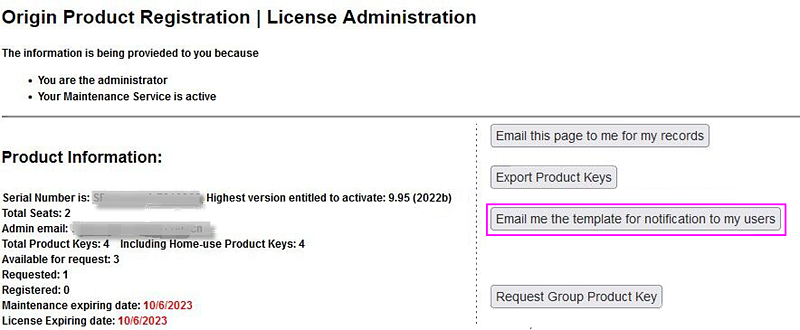

Rechnergebundene Gruppenlizenz (Node-Locked)
Multi-User-Node-Locked-Lic
Sie haben eine rechnergebundene Gruppenlizenz (Node-Locked), wenn Ihre Seriennummer folgendermaßen aussieht:
xFxxx-9xxx-76xxxxx, or
xFxxx-6xxx-76xxxxx.
Sollte Ihre Seriennummer folgendermaßen aussehen:
xxxxx-2xxx-79xxxxx oder
xxxxx-3xxx-79xxxxx,
dann haben Sie eine Concurrent-Netzwerklizenz und die Informationen auf dieser Seite sind NICHT relevant für Sie.
Ein rechnergebundenes Netzwerklizenzpaket (Node-Locked) berechtigt Sie dazu, Origin auf einer Anzahl von Computern, basierend auf der von Ihnen erworbenen Lizenzanzahl, zu installieren bzw. zu verteilen. Jeder dieser Computer muss eine Lizenz von der OriginLab-Webseite erhalten. Die Lizenz ist rechnergebunden. Wenn Sie den Computer mit der Origin-Lizenz austauschen möchten, müssen Sie die Lizenz deaktivieren, bevor Sie eine neue Lizenz für den neuen Computer bekommen.
HINWEIS: Diese Anweisungen gelten für Origin 2017 und höher. Wenn Sie Version 2016 oder älter verwenden, lesen Sie bitte diese Seite.
Administratortipps: Bevor Sie Origin an Ihre Anwender verteilen...
/Video_Image_2016.png) Sehen Sie sich das Video-Tutorial an - Erste Schritte mit der rechnergebundenen Gruppenlizenz (Node-Locked)
Sehen Sie sich das Video-Tutorial an - Erste Schritte mit der rechnergebundenen Gruppenlizenz (Node-Locked)
Für rechnergebundene Gruppenlizenzen (Node-Locked) bietet OriginLab einen Kontrollmechanismus, welche Web-Mitgliedschaftskonten von OriginLab eine Lizenz für die Software erhalten können, die mit Ihrer Seriennummer installiert ist. Dieser Mechanismus soll die unautorisierte Nutzung Ihrer Seriennummer verhindern und sicherstellen, dass alle von Ihrer Organisation gekauften Lizenzen den autorisierten Mitgliedern Ihrer Organisation zur Verfügung stehen.
Verteilungsmechanismus für Produktschlüssel auf der OriginLab-Webseite einrichten
Bitte führen Sie als Origin-Administrator die folgenden Schritte durch, um Ihre Seriennummer zu registrieren, Produktschlüssel zu erzeugen und die Methode zu bestimmen, mit der die Produktschlüssel an Ihre Anwender verteilt werden. Bitte schließen Sie diesen Vorgang ab, bevor Sie Ihre Benutzer darüber benachrichtigen, dass die Origin-Software für sie verfügbar ist.
- Nach dem Kauf erhalten Sie eine E-Mail mit dem Betreff, die Ihre Origin-Seriennummer und einen Link zur Registrierung enthält.
In einigen Regionen von Vertriebspartnern erhalten Sie einen Registrierungscode von Ihrem Vertriebspartner.
- Klicken Sie auf den Link zur Registrierung. Sie gelangen zur Origin-Webseite. Sie werden dann aufgefordert, sich anzumelden oder sich zu registrieren. Melden Sie sich an, wenn Sie bereits über ein Konto verfügen, oder erstellen Sie sich ggf. ein Konto.
Falls Sie den Registrierungscode erhalten haben, öffnen Sie manuell die Registrierungsseite des Produkts https://www.originlab.com/reg von OriginLab, um mit Schritt 3 fortzufahren.
- Nach der Anmeldung werden Ihre Seriennummer, der Code Ihrer Produktregistrierung und drei Optionen zum Verteilen der Produktschlüssel auf der Webseite angezeigt. Wählen Sie eine der folgenden Optionen und überlegen Sie genau, welche Auswahl Sie treffen, da Sie die Option nicht wechseln können, sobald Sie mit dem Lizenzierungsprozess begonnen haben:
-
Ich rufe alle Lizenzproduktschlüssel selbst ab
Wenn Sie diese Option auswählen, sind Sie für die Lizenzierung von jeder Origin-Installation verantwortlich, entweder direkt an dem jeweiligen Arbeitsplatz durch Ausführen von Origin und Eingeben des Produktschlüssels oder indirekt durch Verteilen der Produktschlüssel an Ihre Anwender.
Dies bedeutet, dass:
- Sie sich zunächst an Ihrem Konto auf der OriginLab-Webseite anmelden.
- Klicken Sie auf den Link "Meine Lizenz(en)".
- Suchen Sie die Seriennummer in der Tabelle heraus und klicken Sie auf den entsprechenden Link. Hier werden alle Produktschlüssel aufgelistet.
- Beenden Sie die Lizenzierung, indem Sie Origin auf dem Arbeitsplatzrechner ausführen und einen verfügbaren Produktschlüssel verwenden, um die Lizenzaktivierung abzuschließen.
-
Ich genehmige Lizenzproduktschlüssel, die von Anwendern abgerufen werden
Durch Auswahl dieser Option bekommen Sie eine URL, über die Ihre Anwender einen Produktschlüssel abrufen können. Stellen Sie vor Senden der URL an Ihre Anwender sicher, dass Sie alle E-Mail-Fragmente der Anwender hinzugefügt haben.
Schritte:
- Senden Sie die URL per E-Mail an Ihre Anwender.
- Wenn Ihre Anwender über die URL einen Produktschlüssel abrufen, erhalten Sie eine E-Mail.
- Gehen Sie dann zur Seite "Abruf von Produktschlüsseln bearbeiten" und weisen Sie einer Tabelle von ausgewählten Anwendern Produktschlüssel zu. Es wird eine E-Mail an das Konto des Anwenders gesendet, die den Produktschlüssel enthält.
- Der Anwender installiert Origin, führt die Software aus und verwendet den Produktschlüssel, um die Lizenzaktivierung abzuschließen.
-
Jeder Anwender ruft einen Lizenzproduktschlüssel ab
Durch Auswahl dieser Option bekommen Sie eine URL, die Sie an Ihre Anwender weiterverteilen. Stellen Sie vor Senden der URL an Ihre Anwender sicher, dass Sie alle E-Mail-Fragmente der Anwender hinzugefügt haben.
Schritte:
- Senden Sie die URL per E-Mail an Ihre Anwender.
- Wenn ein Anwender auf die URL klickt, wird ein Produktschlüssel erzeugt, der an den Anwender per E-Mail gesendet wird.
- Der Anwender installiert Origin, führt die Software aus und verwendet den Produktschlüssel, um die Lizenzaktivierung abzuschließen.
- Geben Sie E-Mail-Fragmente nach Bedarf ein.
- Wenn Sie die Option Ich rufe alle Lizenzproduktschlüssel selbst ab in vorherigen Schritt wählen, müssen Sie das E-Mail-Fragment nicht einrichten.
- Wenn Sie Ich genehmige Lizenzproduktschlüssel, die von Anwendern abgerufen werden gewählt haben:
- Wenn Sie einzelnen Personen erlauben möchten, Lizenzen für Ihre Seriennummer abzurufen,
geben Sie Ihre vollständige E-Mail-Adresse ein, d.h. die E-Mail-Adresse, die in Ihrem Konto hinterlegt ist. Nachdem dieser Prozess beendet ist, können Sie zusätzliche vollständige E-Mail-Adressen für von Ihnen zugelassene Anwender hinzufügen (siehe den folgenden Tipp). Sie können jederzeit zur OriginLab-Webseite zurückkehren, um diese E-Mail-Adressen hinzuzufügen, vorausgesetzt, dass Sie die E-Mail-Adresse des Anwenders hinzufügen, bevor dieser versucht, eine Lizenz abzurufen.
- Wenn Sie den Lizenzzugriff auf die Mitglieder Ihrer Organisation beschränken möchten,
geben Sie ein Fragment der E-Mail-Adresse ein, das für Ihre Organisation eindeutig ist und das sicherstellt, dass nur berechtigte Personen eine Lizenz abrufen können.
- Wenn Sie Jeder Anwender ruft einen Lizenzproduktschlüssel ab gewählt haben, können Sie Ihre vollständige E-Mail-Adresse eingeben und zusätzliche vollständige E-Mail-Adressen später hinzufügen, oder Sie geben ein E-Mail-Fragment ein, das für Ihre Organisation eindeutig ist. Siehe die ausführliche Beschreibung oben.
/Tip_icon.png) |
Um zusätzliche E-Mail-Adressen bzw. E-Mail-Fragmente einzugeben, nachdem Sie erfolgreich die/das erste eingegeben haben,
- klicken Sie auf Ihren Benutzernamen, der sich oben rechts von der OriginLab-Webseite befindet (oder melden Sie sich an, wenn Sie zu der Webseite zurückkehren und noch nicht angemeldet sind).
- Klicken Sie dann auf Ihrer "Willkommens"-Webseite auf den Link für die Beschränkungen des Lizenzzugriffs.
- Befolgen Sie die Anweisungen auf der Seite, die aufgerufen wird, um zusätzliche E-Mail-Adressen bzw. -Fragmente hinzuzufügen.
|
- Klicken Sie auf die Schaltfläche Registrieren, um die Registrierung abzuschließen.
|
- Wir bieten einen eindeutigen Gruppenproduktschlüssel für den Administrator einer großen Gruppe an, mit dem Schlüssel unkompliziert an die Endbenutzer verteilt werden können. Dieser Gruppenschlüssel kann Origin auch per Stapelverarbeitung installieren.
- Der Status eines Produktschlüssels kann in Spalte HostID entnommen werden:
-
- “Requested“ ("Angefordert") bedeutet, dass der Endbenutzer diesen Produktschlüssel angefordert hat und diesen Schlüssel über ihr/sein Konto erhalten, aber noch nicht aktiviert hat. Der Schlüssel kann nicht von anderen Anwendern angefordert werden, es sei denn, Sie ändern ihn.
- “Available“ ("Verfügbar") bedeutet, dass kein Endbenutzer diesen Produktschlüssel bisher angefordert hat. Andere Anwender können ihn noch anfordern.
- “HostID“ bedeutet, dass dieser Produktschlüssel angefordert und aktiviert wurde.
/800px-HostID_group.png)
|
|
Wenn Sie sich für Verteilungsmethode 2 oder 3 entscheiden, können Sie den Link zur Anforderung eines Produktschlüssels folgendermaßen erhalten:
- Gehen Sie zur OriginLab-Webseite (www.OriginLab.com). Melden Sie sich an.
- Klicken Sie auf der Willkommensseite auf den Link "Meine Lizenz(en)".
- Klicken Sie auf der Seite Meine Lizenz(en) verwalten auf den Link der gewünschten Seriennummer.
- Klicken Sie auf der Seite Origin-Produktregistrierung | Lizenzverwaltung auf die Schaltfläche "Vorlage zur Benachrichtigung per E-Mail an mich senden". (Falls Sie die Schaltfläche auf dieser Seite nicht sehen können, klicken Sie bitte auf den Link "Alle Produktschlüssel").
- Es wird Ihnen eine Vorlage mit dem Link zur Anforderung des Produktschlüssels zugesendet.
- 
|
Anweisungen zum Bereitstellen des Origin-Lizenzpakets für Ihre Anwender
Wenn Sie Origin an Ihre Anwender verteilen, müssen Sie zusätzlich zu dem Installationsprogramm und der Seriennummer auch die URL für den Abruf des Produktschlüssels zur Verfügung stellen, da dieser während des Lizenzabrufs eingegeben werden muss. Sie müssen den Anwendern außerdem mitteilen, dass Sie sich während des Lizenzabrufs auf der OriginLab-Webseite anmelden bzw. ein Konto für die OriginLab-Webseite erstellen müssen, sollten sie noch über keines verfügen. Informieren Sie die Anwender darüber, dass sie die Kontaktdaten Ihrer Organisation, einschließlich E-Mail-Adresse, eingeben sollten, wenn Sie sich auf der OriginLab-Webseite registrieren.
Wenn sie bereits ein Konto haben, dies aber nicht die E-Mail-Adresse der Organisation enthält (beispielsweise eine gmail-Adresse verwendet wurde), sagen Sie ihnen, dass sie zuerst ihr Konto mit den Organisationsdaten aktualisieren müssen. Sie müssen diese Informationen aktualisieren, indem Sie sich bei der Webseite anmelden und auf den Link 'Meine Profildetails anzeigen/aktualisieren' klicken.
Lizenzaktivierung
Wichtige Hinweise!
- Ab Origin 2017 verfügt Origin über ein neues Lizenzsystem. Sie benötigen keine Administratorrechte, um den Lizenzprozess für Node-Locked-Lizenzen durchzuführen.
- Sobald der Lizenzprozess abgeschlossen ist, wird die Lizenz auf diesem Computer gespeichert. Ein Internetzugang ist danach nicht mehr erforderlich.
|
Lizenzaktivierung durch Anwender
- Sie erhalten Ihre Seriennummer und den zugehörigen Produktschlüssel vom Origin-Administrator.
- Starten Sie Origin. Der Dialog Lizenzaktivierung wird geöffnet.
- Wählen Sie die Option Produktschlüssel unten eingeben und auf Aktivieren klicken und geben Sie Ihren Produktschlüssel ein. Klicken Sie auf Aktivieren.
- Der Lizenzprozess wird nun im Hintergrund durchgeführt. Geschieht dies erfolgreich, erhalten Sie eine entsprechende Nachricht.
Sollte der Lizenzierungsprozess im Hintergrund fehlschlagen, fahren Sie bitte mit den folgenden Schritten fort:
- Wenn der Lizenzierungsprozess aus irgendeinem Grund fehlschlägt (wenn es zum Beispiel keine Internetverbindung gibt oder wenn originlab.com von einer Firewall geblockt wird etc.), dann wird ein Notepad-Fenster mit einem Link darin geöffnet.
- Kopieren Sie diesen Link in einen Webbrowser, der eine Internetverbindung hat. Der Link leitet Sie zur OriginLab-Webseite.
- Der Lizenztext wird erzeugt und auf der Webseite angezeigt.
- Kopieren Sie den Lizenztext und fügen Sie ihn in Origins Dialog Lizenzaktivierung ein. Klicken Sie auf OK.
Abruf einer Lizenz für den Computer eines Benutzers durch den Origin-Administrator
Wenn Sie der Administrator für ein rechnergebundenes Gruppenlizenzpaket (Node-Locked) sind, können Sie einrichten, dass Anwender ihre eigenen Origin-Lizenzen abrufen. Alternativ übernehmen Sie den gesamten Lizenzierungsprozess. Wenn Sie Ich rufe alle Lizenzproduktschlüssel selbst ab beim Einrichten des Verteilungsmechanismus der Produktschlüssel für die Seriennummer wählen, sollten Sie den Anweisungen zur Aktivierung der Lizenz auf einem Anwendercomputer oben folgen.
Siehe auch
-
FAQ
-
Lizenzdeaktivierung
Wenn Sie planen, Ihre lizenzierte Origin-Software auf einen anderen Computer zu übertragen, müssen Sie sie auf dem ursprünglichen Computer deaktivieren und dann eine Lizenz für den neuen Computer mit dem gleichen Produktschlüssel aktivieren.
Falls Origin weiterhin auf Ihrem alten Computer ausgeführt werden kann
- Starten Sie Origin. Wählen Sie Hilfe: Lizenz deaktivieren, um den Dialog Lizenzdeaktivierung zu öffnen.
- Klicken Sie auf die Schaltfläche Jetzt deaktivieren.
- Der Lizenzdeaktivierungsprozess wird nun im Hintergrund durchgeführt. Geschieht dies erfolgreich, erhalten Sie eine entsprechende Nachricht.
Sollte der Deaktivierungsprozess im Hintergrund fehlschlagen, fahren Sie bitte mit den folgenden Schritten fort:
- Wenn der Lizenzierungsprozess aus irgendeinem Grund fehlschlägt (wenn es zum Beispiel keine Internetverbindung gibt oder wenn originlab.com von einer Firewall geblockt wird etc.), dann wird ein Notepad-Fenster mit einem Link darin geöffnet.
- Kopieren Sie diesen Link in einen Webbrowser, der eine Internetverbindung hat.
- Die Webseite zeigt Ihre Lizenzinformationen an. Notieren Sie sich den Deaktivierungscode in Schritt 1.
- Kehren Sie zu Origin zurück. Geben Sie den Deaktivierungscode im Bearbeitungsfeld des Deaktivierungscodes unten im Dialog Lizenzdeaktivierung ein. Klicken Sie auf die Schaltfläche Lizenz deaktivieren.
- Es wird ein Notepad-Fenster mit einem Link darin geöffnet. Kopieren Sie diesen Link in einen Webbrowser, der eine Internetverbindung hat.
- Klicken Sie auf die Schaltfläche Weiter auf der Webseite. Wenn Sie eine Erfolgsmeldung bekommen, ist eine Lizenz für die Wiederverwendung freigegeben.
Falls Ihr lizenzierter Origin-Computer nicht länger verfügbar ist
Wenn Sie der Administrator der Software sind,
führen Sie die folgenden Schritte durch, um die Lizenz auf der Webseite von OriginLab zu aktivieren.
- Gehen Sie zur OriginLab-Webseite (www.OriginLab.com). Melden Sie sich an.
- Klicken Sie auf der Willkommensseite auf den Link "Meine Lizenz(en)".
- Klicken Sie auf der Seite Meine Lizenz(en) verwalten auf den Link der gewünschten Seriennummer.
- Klicken Sie auf der aufgerufenen Seite auf den Link “Alle Produktschlüssel”.
- Klicken Sie auf der Seite Anforderungsverlauf der Registrierung|Lizenzierung Ihres Origin-Produkts auf den Link "Los".
- Überprüfen Sie auf der Seite zum Deaktivieren von Origin auf einem Gerät die PC-Daten und klicken Sie auf Weiter. Falls die Deaktivierung erfolgreich ist, erhalten Sie eine Benachrichtigung und der Produktschlüssel kann erneut verwendet werden.
- Sollte die Deaktivierung fehlschlagen, leitet die Seite Sie automatisch an das Anfrageformular für Systemübertragung weiter. Füllen Sie das Formular aus und senden Sie ein.
Wenn Sie der Anwender der Software sind,
wenden Sie sich bitte an Ihren Administrator, um die Deaktivierung der Lizenz auf der Webseite von OriginLab zu veranlassen.
FAQ
-
Ihre rechnergebundene Gruppenlizenz (Node-Locked) nach der Verlängerung der Softwarepflege aktualisieren
Ab Origin 2018 haben verschiedene Versionen die gleiche Lizenz. Das bedeutet, dass die neuere Version alle Lizenzen der alten Version mitsamt ihren Produktschlüsseln und ihrem Nutzungsstatus übernehmen wird. Auf diese Weise wird das Upgrade einfacher.
Wenn Sie der Administrator der Software sind,
Nachdem die Verlängerung Ihrer Softwarepflege durchgeführt wurde, wird automatisch ein Upgrade für Ihre Seriennummer auf die aktuelle Version vorgenommen. Alle lizenzverbundenen Einstellungen der vorherigen Version (einschließlich des Mechanismus zum Verteilen der Produktschlüssel und der E-Mail-Fragmente) werden auf die aktuelle Version angewendet. Sie können Ihre Anwender informieren, sobald Sie bereit sind. Im Folgenden finden Sie einige Tipps aufgeführt.
- Gehen Sie zur OriginLab-Webseite (www.OriginLab.com). Melden Sie sich an.
- Klicken Sie auf der Willkommensseite auf den Link "Meine Lizenz(en)".
- Überprüfen Sie auf der Seite Meine Lizenz(en) die Spalte Version in der Tabelle der Seriennummern, um nachzusehen, ob eine neuere Version für ein Upgrade zur Verfügung steht.
-
- Falls ja, weisen Sie Ihre Anwender an, die neue Version mit dem gleichen Produktschlüssel zu installieren und zu aktivieren. Im Abschnitt Wenn Sie der Anwender der Software sind > Wenn eine neue Version für ein Upgrade zur Verfügung steht können Sie die dazugehörigen Schritte ausführlich nachlesen.
- Wenn keine neuere Version zur Verfügung steht, können Sie Ihre Anwender anweisen, mit dem gleichen Produktschlüssel eine neue Lizenz für die aktuelle Origin-Version mit einer aktualisierten Softwarepflege anzufordern. Im Abschnitt Wenn Sie der Anwender der Software sind > Wenn keine neuere Version zur Verfügung steht können Sie die dazugehörigen Schritte ausführlich nachlesen.
- Wenn Sie eine Reihe von Produktschlüsseln ersetzen möchten, lesen Sie diesen Abschnitt.
Wenn Sie der Anwender der Software sind,
- erhalten Sie die Verlängerungsinformationen von Ihrem Administrator.
- Wenn eine neue Version für ein Upgrade verfügbar ist,
- installieren Sie die neue Version auf dem Computer, auf dem das aktuelle Origin aktiviert ist.
- Starten Sie Origin. Der Lizenzprozess wird dann automatisch im Hintergrund durchgeführt. Geschieht dies erfolgreich, erhalten Sie eine entsprechende Nachricht. Schlägt die Aktivierung fehl, wird ein Notepad-Fenster ausgerufen, das weitere Anweisungen enthält. Befolgen Sie die Anweisungen, um Origin manuell zu aktivieren.
Wenn keine neue Version verfügbar ist,
- Starten Sie Origin. Wählen Sie Hilfe: Lizenz aktivieren.
- Der Produktschlüssel ist im Dialog Lizenzaktivierung bereits eingetragen. Klicken Sie auf die Schaltfläche Aktivieren. Geschieht dies erfolgreich, erhalten Sie eine entsprechende Nachricht. Schlägt die Aktivierung fehl, wird ein Notepad-Fenster ausgerufen, das weitere Anweisungen enthält. Befolgen Sie die Anweisungen, um Origin manuell zu aktivieren.
- Nachdem der Aktivierungsvorgang beendet ist, wählen Sie Hilfe: Über Origin, um zu prüfen, ob das aktualisierte Ablaufdatum der Softwarepflege korrekt ist.
Administratortipps: Wenn eine Reihe von Produktschlüsseln zurückgesetzt werden soll
| Hinweis: Das folgende Webtool gilt nur für die aktive Softwarepflege. |
- Gehen Sie zur Webseitevon OriginLab (www.OriginLab.com). Melden Sie sich an.
- Klicken Sie auf der Willkommensseite auf den Link "Meine Lizenz(en)".
- Klicken Sie auf der Seite Meine Lizenz(en) verwalten auf den Link der gewünschten Seriennummer.
- Klicken Sie auf der aufgerufenen Seite auf den Link “Alle Produktschlüssel”.
- Aktivieren Sie auf der Seite Origin-Produktregistrierung | Verlauf der Lizenzabrufe das Kontrollkästchen für die Produktschlüssel, die nicht verwendet werden (Feld des Hostnamens ist leer).
- Klicken Sie auf die Schaltfläche Anfrage an OriginLab, die ausgewählten Produktschlüssel zurückzusetzen.
- Nennen Sie den Grund für das Ersetzen im Bearbeitungsfeld Kommentar. Klicken Sie auf OK.
- Wenn Ihre Anfrage verarbeitet wurde, erhalten Sie eine E-Mail, die Sie darüber informiert, dass die Produktschlüssel zurückgesetzt wurden. Sie können die neuen Schlüssel auf der Seite der Lizenzverwaltung sehen.
|
Wenn Sie eine große Gruppe von Schlüsseln zurückzusetzen haben, wenden Sie sich bitte an den Lizenzsupport unter Angabe des Grunds und hängen Sie eine Liste der zurückzusetzenden Produktschlüssel an.
|